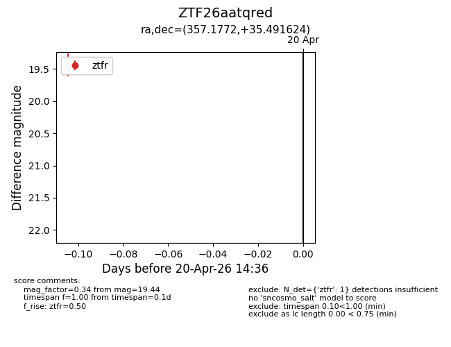
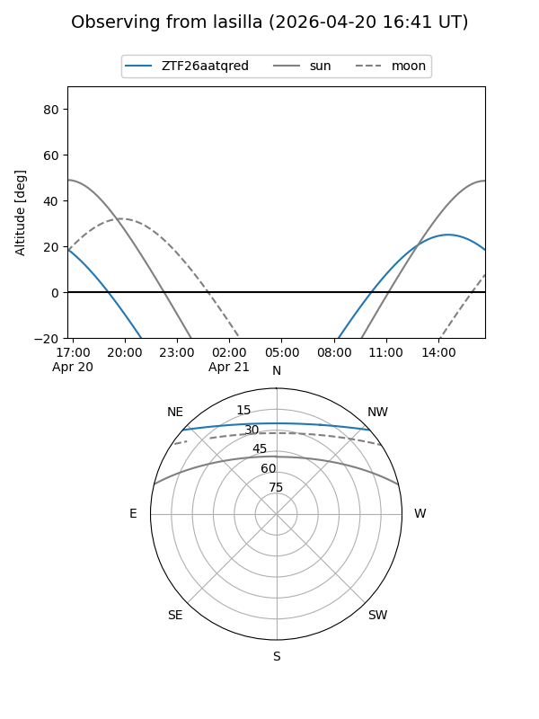
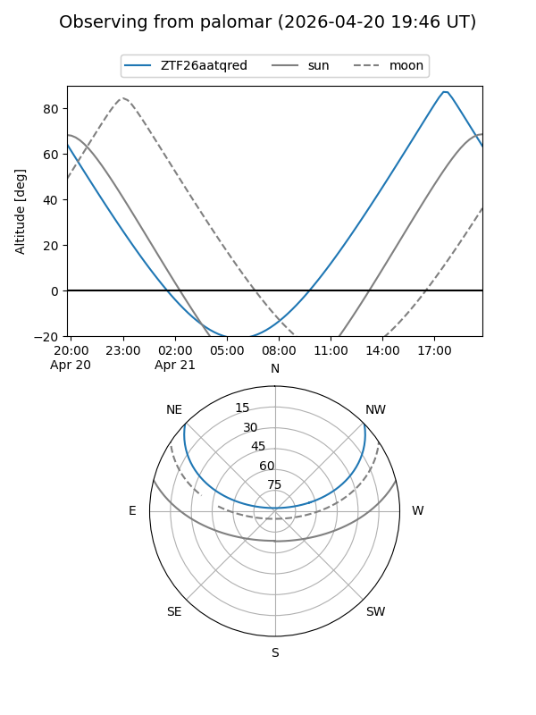

ZTF26aatqred
Target ZTF26aatqred at 2026-04-20 14:48
Aliases and brokers:
FINK: link
Lasair: link
ALeRCE: link
alt names
ZTF26aatqred (ztf,fink_ztf)
Coordinates:
equatorial (ra, dec) = 357.1772,+35.49162
equatorial (HMS+DMS) = 23:48:42.52,+35:29:29.85
galactic (l, b) = (108.8006,-25.65286)
Flags:
Photometry:
last ztfr=19.44
1 ztfr detections
Lightcurve

Visibility


Additional plots